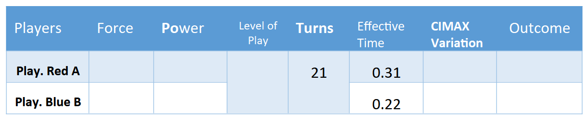
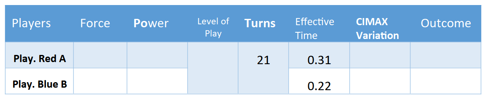

EXERCICES
Exercise 1

Exercise 2
 
Exercise 3
References
Bibliography
- Bell, R. C. (1979). Board and Table Games from Many Civilizations. Dover Publications.
- Stern, E. (2014). A History of Board Games Other Than Chess. Oxford University Press.
- Parlett, D. (1999). The Oxford History of Board Games. Oxford University Press.
- Zimmerman, J. (2015). The Game Designer's Guide to Board Games. New Riders.
THE END
Acknowledgments To Yosdel Muñoz (Father of Xima) for the reviews, passionate debates, and the late-night Xima games played to complete the book and increase its comprehension. To Giselle Borrero Blanco for the grammatical revisions of the book and for verifying the equations and algorithms explained in the book. For any questions or suggestions, feel free to contact via email at adrianwilliam1998@gmail.com.